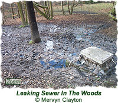
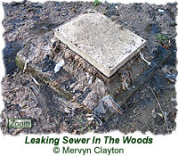

|
|
5th March 2003
The interview concerned the problem of a blocked sewer leaking raw effluence straight down the side of Gledhow Valley, through the woods and over footpaths. It was first broadcast on the Radio Leeds Breakfast Show between 7.06am and 7.13am on Wednesday 5th March 2003, and involved the following people:
A full transcript of the interview is provided further down this page, but it is also available to listen to as an MP3 audio file, which you can download below.
Note: Sound quality has been sacrificed to a degree in order to keep the file size as small as possible. You will need to have software capable of playing MP3 files (such as QuickTime) in order to listen to the interview... if you have any difficulties, please see the Help! page.
The follow-up to this interview can be found on the page entitled 06-03-2003 Campaign Against Leaking Sewer in the Woods (Part 2 - Conclusion). Further information on the issue can be found on the Campaigning Against Water Pollution page in the Examples of How the Friends are Making a Difference section.
 
Liz: Now, this is the kind of news that you'll be glad you can only hear, and you can't see it or , heaven forbid, smell it! People living near an urban woodland in this city Leeds are horrified that raw sewage is pouring out of an overflow pipe onto footpaths.
Andrew: We're talking about Gledhow Valley Wood, that's used by dog walkers and families, and when it rains sewage runs from this pipe down the hill. We gave our reporter Sally Young the rather unenviable task of looking into the problem.
Martin: We get kingfishers down here, and dippers, and the flowers are brilliant. There are snowdrops now, there'll soon be celandines and bluebells, and it's a really brilliant, sort of, wildlife oasis.
Dorothy: This is what used to be the main carriageway to the big house.
Sally: Martin Calvert and Dorothy Carter belong to the Friends of Gledhow Valley. They love this stretch of urban woodland, which runs along the valley between Chapeltown and Harehills. But for the last six months the natural beauty of the woodland has been severely marred by this... (squelching noises!) ...raw sewage.
Dorothy: Well there's just raw sewage, and there's water running down from the sewer head the whole time. It smells terrible, and er...
Martin: It's a sea of condoms and sanitary towels.
Sally: It's a real, real mess... urgh! It's a concrete block and there's just water coming out and lots of rubbish, and it's just streaming all the way down the hill through these trees, through this, what is essentially a beautiful parkland.
Martin: We've go a... there's a problem with rats in the woods anyway and obviously they're gonna thrive on this sort of thing. And then kids play in here, kids play in the stream you know, and you just, you just sort of... somebody's going to catch something at some point. And they'd be unlucky if they did but they will do at some point, you know, and it's just the consequences aren't really worth thinking about.
Sally: The problem's caused by a blocked pipe - the sort of problem you would have thought would be quite easy to sort out... but apparently not!
Martin: Dorothy's been sort of spearheading our campaign... and she's been going from, round in circles between the Environment Agency, Yorkshire Water, and the Council. And the problem with it is, it's not been adopted by anybody. So while ever it was unblocked it was fine any nobody knew about it. It became blocked and nobody really wants to know about it. Yorkshire Water will adopt it if, if they have to but it's a question of whether it's a private sewer or not. And if it's a private sewer they won't adopt it. And it's because of this we've been going round in, well basically circles, or triangles from the three people... and nobody will, like, take responsibility to sort it out.
Sally: The pollution caused by this blocked sewage pipe is quite simply disgusting. It smells revolting, it looks horrible, and what's even more shocking is that it's been like this for over six months! The people who walk through this wood; the people who can smell the sewage from their homes on a warm day say something has to be done... and done quickly.
This is Sally Young reporting for the Radio Leeds Breakfast Show in Leeds.
Andrew: Thank you very much indeed Sally. Almost ten past seven. So a couple of big questions there.
Who's responsibility is the sewer? Well we asked both Yorkshire Water and Leeds City Council's Health Department - the Environmental Health Department - to speak to us about the problem. Neither of them wanted to. Leeds City Council say they're looking into the problem; Yorkshire Water said that they were sending someone out to investigate last night, and would work to achieve a satisfactory outcome.
Let's see if anything's changed then. Martin Calvert, you heard in Sally's report there, can tell us I'm sure if any progress has been made. Morning Martin.
Martin: Morning!
Andrew: Yorkshire Water said they were sending someone out, then... did you meet anyone? Do you know if they turned up?
Martin: Er, didn't meet anybody. They rang me up last night, and they'd just come to the conclusion it's a private sewer, which basically means they can wash their hands of the affair.
Andrew: But I think you knew it was a private sewer already didn't you?
Martin: Yeah, there's nothing new there. We're just, we're just really very frustrated. I'm sure the people who're creating the sewage, they're paying their water rates, they're expecting their sewage to be dealt with properly, and it's just not happening.
Andrew: Now, we've looked into this a bit and I know it is complicated because, um, there's a distinction, depending on the age of the sewer, about who has the responsibility for it and basically if it's after 1937, as I understand it, Yorkshire Water can say it isn't one of our sewers. So in a sense you can understand what they've said.
Martin: We've just got to leave it then and let the sewage pour out in to the woods!? I can understand that but it's sewage, it's in Yorkshire - it's gotta be their responsibility.
Andrew: Well, let's turn it the other way round, then. What about Leeds City Council from a health point of view, because clearly it can't be good for anybody if this is happening. So what about the Council's side of it? Do you think they should do something?
Martin: Well, the Council have now actually roped the site off, and they are looking into it. They say they're talking to their solicitors and looking into it. But it is, it's now, they're getting involved now because it's a statutory nuisance and they've realised that and so now they're going to do something about it. But they're still coming up against this brick wall that's Yorkshire Water, that won't adopt it.
Andrew: I mean, from their point of view here's the bit - if the sewer's private and hasn't been adopted by Yorkshire Water, which clearly even after the visit last night it hasn't, the Council can serve a legal notice on the home owners responsible for clearing the blockage giving then 48 hours to clear it. So, what do you make of the wording of that, Martin?
Martin: I think they don't know who's creating the sewage; they don't know who the home owners are, that's the trouble.
Andrew: So clearly you feel that one of these two organisations, and you clearly from what you said feel the onus is on Yorkshire Water, they should simply sort it out.
Martin: Yeah, and the Environment Agency should get involved. They're just washing their hands of the affair as well. Their, their job is to, to look into pollution, to pollution spillages in the woods and they, they've looked into it and just passed it on to Yorkshire Water, who've passed it on to the Council... and this is what's happening all the time - we're just going `round between the three.
Andrew: It's a horrible problem, and we heard there... I mean I've, I've run through the area - I mean, it's a beautiful place, mentioned the kingfishers and the rest of it. This is six months, isn't it!?
Martin: Ah, it's just unbelievable. I mean, you, you just, you, you can hear it when on, on the radio but to, to see it - it's a sea of condoms and sanitary towels, and it's just disgusting!
Andrew: OK, speak now to Yorkshire Water and, if you feel you need to, to the Council as well. I know people will be listening and I hope for goodness sake we get some action, Martin. What would you say to them when we've got effectively both hands, both sides washing their hands of it?
Martin: I, it, it just needs somebody to, to sort of talk to them; knock their heads together. I mean it's, it's, the, the cost of it would be, would be nothing, and they're getting all this money from people paying their water rates in Leeds. The people who are creating the sewage - I'm sure they're paying their water rates. Just something has to be done it, it's a awful mess.
Andrew: As you say, somebody probably just sitting along side there for a couple of hours might focus the mind, mightn't it?
Martin: Hopefully, yeah!
Andrew: Nice to speak to you, Martin. I hope you get somewhere soon and hopefully, if we get some progress, we'll have an update here on Breakfast. Thanks Martin.
Martin Calvert. You heard him I the report; you heard the update... nothing new, sadly, to report. Let's hope for goodness sake we get some progress today up at Gledhow, and, er, the awful problem of the sewage.
Thirteen minutes past seven.
- end -
If you come across any articles in newspapers or magazines which relate to the Friends of Gledhow Valley Woods, or to the woods in general, please contact us so we can add them to the site.
|
| |||
 |